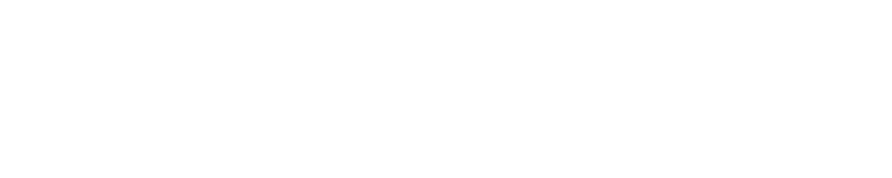

LA DISCUSSION
Un premier échange de 30 à 60 minutes permet de poser le projet.
Cette discussion est gratuite. Elle peut avoir lieu à Troyes ou à distance selon le projet.

Tatouage abstrait · Blackwork · Dotwork
Troyes · Namur en guest régulier
Une expérience.
Une sensation.
Une histoire.
Une idée.
Quelque chose qui a laissé une trace.
Je pars de cette matière pour la traduire dans mon langage graphique.
Vous apportez ce qui doit être exprimé.
Je suis responsable de la manière dont cela devient une forme.
Une idée, une expérience, une sensation, une image, quelques références ou simplement quelque chose que vous souhaitez exprimer peuvent devenir le point de départ.
La discussion permet de faire émerger ce qui compte pour vous, d'en préciser la matière et d'en chercher la traduction graphique.
Le tatouage se construit ensuite dans cet espace entre votre intention et mon langage graphique.
Ne pas reproduire ce qui existe déjà.
Ne pas transformer une histoire en motif décoratif.
Ne pas suivre une tendance parce qu'elle fonctionne.
Ne pas lisser ce qui dérange.
Ne pas chercher à rendre une forme acceptable à tout prix.
Faire avec ce qui marque.
Le transformer.
Lui donner une autre existence.
Nous ne chercherons pas à faire un tatouage qui plaît à tout le monde.
Nous donnerons un corps unique à une intention unique.
Mon langage graphique n'est pas négociable.
Votre intention ne l'est pas davantage.
Un premier échange de 30 à 60 minutes permet de poser le projet.
Cette discussion est gratuite. Elle peut avoir lieu à Troyes ou à distance selon le projet.
À partir de ce qui a été échangé, je développe le projet et sa composition en fonction de votre corps.
Le projet vous est présenté avant le rendez-vous de tatouage.
Vous pouvez demander des modifications. Le projet peut évoluer jusqu'à ce qu'il corresponde à ce que nous avons cherché ensemble.
Le rendez-vous est fixé avec un acompte.
Je travaille autour de l'interprétation d'une matière personnelle : une expérience, une sensation, une colère, une incompréhension, quelque chose qui a laissé une trace.
Mon travail cherche à transformer cette matière plutôt qu'à l'illustrer. Le corps devient le lieu où elle prend une autre existence.
Parlez-moi de ce qui vous amène, même si sa forme reste encore à trouver.
Vous pouvez partir d'une expérience, d'une sensation, d'une idée, d'une image ou simplement de quelque chose que vous souhaitez inscrire sur votre corps.
Nous en discuterons avant de décider de la forme que cela prendra.